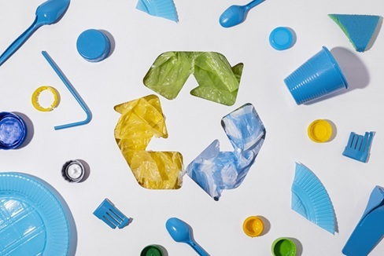

-
Clean Water Ahead: How Can We Solve Water Pollution

TEACHING PEOPLE
We need campaigns to stop littering and save water. Communities can also organize clean-up drives to keep rivers and lakes clean.
-

3Rs - REDUCE, REUSE, RECYCLE
We should avoid single-use plastics like straws and bags. Recycling should be improved so trash gets reused. Packaging that breaks down naturally is a good choice too.
-

WATER FILTRATION
The group named the prototype "The Water Project - DALOY".
It is a water filtration process that follows a sequential path starting with:
1. Big Stones (Initial Layer).
2. Small Stones.
3. Charcoal.
4. Clean Cloth.
5. Sand.
6. Cotton(Final Layer).
Know more about the water filtration prototyoe click DALOY